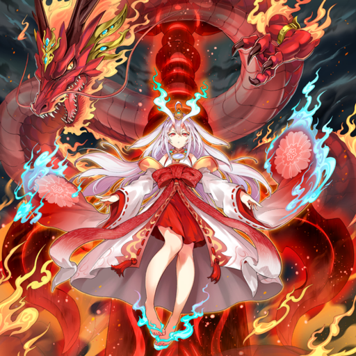

A diabolic nightmare ironically crowned with the name of a God, it was originally constructed to counter a threat. Matching its title of 'Sky Thunder', it can burn the sky with thunder, shatter the stars themselves, and slay even the Gods. "WE. SHOULD. DESTROY. THE. DISASTER. WITH. THE. LAST. AND. ULTIMATE. ATTACK. BY. MANKIND..." The "Counter-Offensive Weapon AA-ZEUS" is the 12th Weapon, designed to fight fate, that humanity created in the face of countless threats of extinction.
A group of birds have a strong sense of justice who refuse to let evil take hold. The Hero has a habit of going ahead and leaping before he looks at whatever comes his way. He is in a party with the like-minded Martial Artist, Ninja, Cleric, and Spellcaster, who have vowed to death the forces of evil. The party's big adventure begins here!!
The five penguins, thanks to each of their strong points, make the party even stronger. Furthermore, the elites of each Penguin species assemble together, unleashing the potential of heroes never before seen in the history of Penguindom.
A Goddess who inherits the blood of Heaven, who is trapped and grieving on the other side, but glows with an unmatched aura while accompanied by her beloved Dragon, "Kur". Deprived of light, she rejects everyone else, and refuses to forgive the world of the living. When someone appears before her, the light goes out. There is no one who has ever seen her cold beauty, and only the fact she exists is known. Her name is Eres. And she used to have the sparkle of sunlight in her eyes.
She's dressed in an elegantly-designed outfit that steals the heart of the viewer, while her loyal dragon moves behind her in the background in an infinity symbol-shaped orbit.
An ancient, immemorial age. The king of the demon gods who ruled over the demon world, massacred the human world, and challenged the heavenly realm. Its body was massive enough to cover the sky. At the end of the war, the armies of the angels were unable to destroy it, sealing it instead in a gap between worlds. It was expected that after an eternity its body would falter and die in oblivion, yet the spirit of the demon god did not vanish. Once the world is filled to the brim of demonic power, the king shall descend once again, wielding its forbidden power.
Some years have passed since he lost communication with his father after the day of the experiment. The young boy discovers the aged schematics for an engine and the letter his father left behind in the storehouse. "I'll be waiting beyond the speed of sound." Giving wings to his feelings for his father, the challenge against the speed of sound begins now!
The young boy tries to develop a new engine based on the schematics of his father. He manages to create a new technology inspired by the legends he read in some books of a divine bird that inhabits a sacred mountain.
A young girl who is the greatest archer of the forest clan. At the moonlit fountain of the sanctuary, she threatens those from the outside world, riding to battle with her bow atop a divine beast that is her companion.
As the forces of the mighty invaders invading the holy precincts​ of the moonlight grew larger, the guardian girl continued her fight. During that fight, the girl managed to release the true power of her divine bow, and the radiant "Ultimate Slayer" took flight at divine speed. The enemies of the goddess shall be destroyed.
There was a divincarnation that smote evil as the embodiment of punishment itself, and had command over the scorching skies. With a swing of the Flamesword of Prajna, the filth of this world shall return to ash. O sinners, may you be scorched by the fury of the Dragon King.
Behind the figure of a cute girl, a noble dragon god surrounded by an inferno swirled around.

In order for Clara, who's a major introvert, to get along with others, she needs to borrow the help of her favorite doll, Rushka... in fact, she's a ventriloquist doll people think is actually her flesh-and-blood friend.